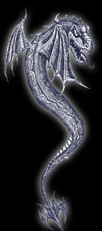
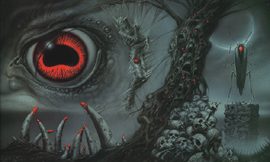

| Сатанизм http://schools.keldysh.ru/school1413/religija/satan.htm |
|  |  |
Люцифер. Страшное имя, сразу же представляющее нашему воображению омерзительный лик дьявола. А ведь имя это переводится дословно как "несущий свет", так был назван один из прекраснейших Божьих ангелов. Но Люциферу и этого оказалось мало. Он упивался своим ангельским происхождением, сверхъестественными способностями, бессмертием и приближенностью к Богу. Однако гордость его со временем стала так велика, что он не захотел иметь над собой никаких господ, даже Господа Бога. И Люцифер взбунтовался, свершив своеобразный военный переворот и возглавив армию таких же недовольных своей судьбой ангелов, вместе с которыми и повел войну за господство. Бог решил покарать мятежных ангелов за гордыню и поручил командование своими войсками архангелу Михаилу. "И произошла на небе война: Михаил и ангелы его воевали против дракона, и дракон и ангелы его воевали (против них), но не устояли, и не нашлось уже для них места на небе. И низвержен был великий дракон, древний змей, называемый дьяволом и сатаною, обольщающий всю вселенную, низвержен на землю, и ангелы его низвержены с ним. Итак веселитесь, небеса и обитающие на них! Горе живущим на земле и на море! Потому что к вам сошел Диавол в сильной ярости, зная, что немного ему осталось времени". Так сказано в 12-й главе Апокалипсиса. А низвергнутый с небес Люцифер перестал существовать как ангел. Он получил новое имя - Сатана, и новую обитель - ад. Ангелы, падшие вместе с ним, стали демонами. Что ж, никто не обходится без дела. Проклятые Богом и обреченные на вечные муки, Сатана и его окружение нашли себе занятие - соблазнять и подкупать человека. И, как оказалось, людей, которые оказались слишком грешны и неразумны, чтобы противостоять соблазнам, нашлось более чем предостаточно во всей истории человечества. Так гласят библейские легенды. А что же говорят факты? "Церковь Сатаны", "Сатанинская Библия", "Черная месса", "Легион дьявола", "Сатанинские тихи" - эти и другие названия книг или фильмов говорят о том, что поклонников сатанизма на Земле развелось свыше десятков миллионов. Вот и у нас на телеэкране промелькнул отечественный фильм, горький и безжалостный, с тем же вызывающим заголовком "Сатана". Впрочем, некоторые атеисты утверждают, что сама церковь придумала Сатану, исходя из того вывода, что не будь дьявола, многие набожные люди никогда не помышляли бы ни о Боге, ни о его духовенстве. Стоило Фоме Аквинскому признать существование дьявола и его колдовских сил на земле, как развернулась охота церкви, а затем созданных ею специальных отрядов инквизиции на ведьм и колдунов, истребление любой ереси на воспылавших по всей Европе кострах. Нынче никого не жгут, но по-прежнему действует конституция "О церкви в современном мире", принятая Вторым Ватиканским собором, которая провозглашает, что проповедь должна послужить величию Бога и "посрамлению дьявола". Нисколько не изменился и кодекс иезуитов - последователей Игнатия Лойолы, создавшего "Общество Иисуса" еще в 1534 году. И сегодня журналы иезуитского ордена твердо и прямо ставят риторический для них вопрос: "Разве позволительно сомневаться относительно существования ангелов и демонов? Большинство теологов ответило бы, что в таком случае подвергается сомнению одна из религиозных истин". Юность человечества столкнулась с борьбой добра и зла не только в пору христианства, но и гораздо раньше. Уже тогда появилась черная магия, разбудившая в людях темные силы. Элифас Леви в своем труде "Учения о высшей магии" пишет: "Всякое действие подлежит суждению, и это суждение вечно. Таковы догматы и принципы. Согласно этим принципам и этим догматам добро и зло, которых вы желает себе или другим, в сфере нашего желания и в сфере вашего действия, наступят неукоснительно для других или для вас, если вы установите вашу решимость на деле (действиями). Действия должны быть аналогичны желанию. Желание вредить или заставить любить себя должно быть проявлено актами ненависти или любви." Одним из самых страшных действий считалось энвольтование, когда люди с животными страстями всеми силами стремились погубить других, используя чудовищные средства. Когда им указывали человеческую мишень, то они доставали для себя ее волосы, зубы или фотографию, давали проглотить один из этих предметов живой жабе, называя ее именем выбранной жертвы. Затем вешали эту жабу в печной трубе, прокалывали ее гвоздями, сопровождая эти действия страшными проклятиями. При этом воля агента энвольтований в экстазе становится столь ядовитой, что несчастная жертва изнемогает от неизвестной, но изнурительной болезни, перед которыми наука становится в тупик. Но если посвященный угадывает энвольтование и отвращает его последствия, то колдун сам становится жертвой, будучи поражен своим собственным оружием. В книге Ж.Буржа "Магия" приводится пример, как один недоверчивый священник толкнул однажды некую колдунью, свалив при этом в грязь. Колдунья пригрозила: "То, что ты сделал, не останется для тебя безнаказанным". В тот же день священник захворал непонятной болезнью, которая три года причиняла ему большие страдания. И освободился он от недуга лишь перед самой смертью колдуньи, которая призвала его к себе и, исповедуясь, призналась, что она энвольтировала его. Церковный суд той же Франции в октябре 1440 года рассматривал однажды дело одного из самых могущественных дворян страны. Его обвиняли в том, что он преклонялся перед духами, приносил им жертвы, вызывая их и учил этому последователей. Он приобщился к таким отвратительным делам, что имя его стало символом разврата и излишеств. Звали его Жиль де Рэ. Когда-то смело сражавшийся за Францию под знаменами Жанны д'Арк, он получил звание пэра и заслуженно унаследовал огромные земли и богатства. Но натура его была двойственной, словно бы белой и черной одновременно. Черная в конце концов взяла верх. Карьера Жиля де Рэ шла вверх по прямой. Титул маршала Франции, редкая привилегия носить королевский знак Лилии. И вдруг. в возрасте двадцати восьми лет блистательный военачальник удаляется в родовой замок и начинает новую карьеру - алхимика, дьяволопоклонника и убийцы. С помощью флорентийского священника Франческо Прелатти он собирался открыть секрет философского камня - проще говоря, найти материал, необходимый для превращения металлов в золото. После многих бесполезных опытов Прелатти поведал маршалу, что знает еще один путь к неслыханным богатствам. Для этого нужно только вызвать самого дьявола. У де Рэ не было желания отдавать дьяволу бессмертную душу. Но Прелатти убедил его, что можно поступить по-другому. Он якобы однажды вечером ходил в лес и вызывал дьявола, который просил его называть "Бароном". Дьявол обещал золотые плиты, если ему будет оказано должное почтение и принесены жертвы. Жертвы эти представляли собой кровь, кости, руки и глаза убитых детей. Де Рэ размышлял недолго. За несколько лет в окрестностях замка пропало огромное количество детей. Самых красивых мальчиков и девочек заманивали в замок, и после этого их никто больше не видел. Все молчали. И лишь когда де Рэ напал на священника, епископ Нантский добился, что бы ужасные деяния маршала, продавшего душу дьяволу, стали явными. Куда там черным мессам, где приносили в жертву одного ребенка в год, проливая его кровь на живот обнаженной женщины! Жиль де Рэ искалечил и убил сотни детей, наиболее симпатичные головы сохраняя как реликвии. Исповедь преступника на суде была столь чудовищной в подробностях, что председательствующий епископ накрыл распятие одеялом. Маршал Франции был сожжен на костре. Естественно, трудно в одном обзоре рассказать о всех сатанистах - их многочисленные секты сегодня охватили весь мир. Поэтому мы рассказали о некоторых "ярких" или, точнее, "черных" личностях, воспевавших дьявола или сотрудничающих с ним, сея по всюду вседозволенность и зло. Как правило, новые Антихристы прикрываются именем Божьего Сына. Только за последние 25 лет миру явилось более полусотни новых Христосов. 5 тысяч фанатиков объединил вокруг себя знахарь Жорж Ру из французского городка Монфавэ, который объявил себя Иисусом еще в октябре 1950 года. Он даже издавал газету "Золотой мессия". Еще один "Христос" объявился в США, создав свою секту в неприступной крепости, которую атаковали американские спецподразделения, но так и не добились успеха. Лидер сектантов некий Джонс погубил себя и все свое братство, не пожалев и малых детей. В чем же притягательность многочисленных сект сатанистов, противопоставивших себя церкви? Не только, конечно, в роли пастырей, обладающих заметной магической силой, но и в слабости церкви, не умеющей найти путь к сердцу каждого человека. Российский опыт только подтверждает это. На сознание юношей и девушек, растущих в лишенном идеалов обществе, новые идеи действуют как наркотик. Не иссякает поток юных посетителей в подъездах дома на Садовой, где проходил бал Сатаны из блистательного романа Михаила Булгакова "Мастер и Маргарита". И вот что странно и непонятно - из этого произведения молодежь меньше всего обращает внимание на линию Иешуа-Пилат, а взахлеб зачитывается сценами с Воландом, Коровьевым, Азазелло и котом Бегемотом. С Волондом все ясно - это одно из воплощений Сатаны. Заглянем в справочник. Бегемот - огромный демон и сторож в окружении Люцифера. Азазель - знаменосец армии Ада. Да, Михаил Булгаков смирился с тем, что Земле правят падшие ангелы. Но стоит ли нам нам присоединятся к этому смирению? |
| Ярко и эмоционально, нет равнодушия. Это одна из самых талантлиых статей. |